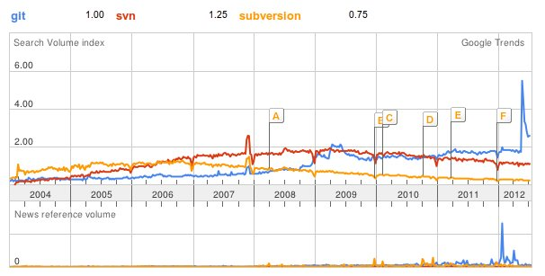

Linus Torvalds began the development of Git on the 3rd April 2005 after BitKeeper (the source code management system used by the Linux kernel developers) had withdrawn the free use of the product.
Torvalds wanted a distributed system that he could use like BitKeeper, but none of the available free systems met his needs, particularly his performance needs.
Torvalds had several design criteria:
On the 16th of June, the kernel 2.6.12 release was managed by Git.
Since then, Git has gained popularity and also demand in the market. [ ITJobsWatch.co.uk ]

1,850,535 people hosting over 3,300,246 repositories (as of the 21st of July 2012)
Who is using it?
and more...
[Git Hub]
The advantages of having a local repository:
The data model that Git uses ensures the cryptographic integrity of your project. Every file and commit is checksummed and retrieved by its checksum when checked back out.
Changing any data (file, date, commit message, etc) in the repository would change the IDs of everything after that point.
It means that if you have a commit ID, you can be sure that your project is exactly the same as when it was first committed, and also that its history was not changed.
GREP can be used to search for keywords in the repository history.
$ git grep hello $(git rev-list --all)
In Git, everything is a branch, that's why a lot of effort has been put into doing the merge right.
Because of Git's speed and its "smart" merging algorithms the way we develop software can change.
Branching and merging should become an easy task every developer would perform every day.
Every story (even small ones) should be a different local branch.
This would allow us to "freeze" the work we are doing on a current story and focus on a quick/hot fix. For example.
Red Hat based systems
$ yum install git
Debian based systems
$ apt-get install git-core
$ git config --global user.name "Andrea Bolandrina"
$ git config --global user.email "andrea.bolandrina@domain.com"
List all variables set in the config file.
$ git config -l
user.name=Andrea Bolandrina
user.email=andrea.bolandrina@domain.com
core.repositoryformatversion=0
core.filemode=true
core.bare=false
core.logallrefupdates=true
User preferences like real name, email address, preferences, command aliases, etc are held in the user's home directory in a file called ~/.gitconfig.
$ git init
$ git add .
$ git commit -m "first commit"
$ git clone /local/git/directory/
$ git clone ssh://andrea@domain.com/remote/git/directory/
$ git clone git://github.com/username/projectname.git
$ git-svn clone svn://domain.com/svn/repos/project
$ git svn clone svn://domain.com/svn/repos/project
├── COMMIT_EDITMSG
├── config
├── description
├── HEAD
├── hooks
.....................
├── index
├── info
│ └── exclude
├── logs
.....................
├── objects
│ ├── 00
│ │ └── c189cb814a3e3df8183cde34b287ab22dc9389
.....................
│ ├── info
│ └── pack
├── ORIG_HEAD
└── refs
├── heads
│ ├── master
│ └── test
└── tags
You start working on a new story
$ git branch story23
$ git checkout story23
Start making your changes
$ vim template.php
$ git commit -a -m 'story23: changed footer'
While you are half way through you are required to fix something else urgently
So you checkout the master to have a clean tree (your previous changes are safe in the branch "story23")
$ git checkout master
Create a "hotfix" branch
$ git branch hotfix
$ git checkout hotfix
Remove that "die($variables);" you left on the home page (without telling your manager)
$ vim template.php
$ git commit -a -m 'hotfix: live fatal error on homepage FIXED'
Merge your changes back to the master and it's now ready to go live (PUSH required)
$ git checkout master
$ git merge hotfix
Delete the branch no longer needed
$ git branch -d hotfix
And go back to your "story23"
$ git checkout story23
List, add and delete remote repository aliases
$ git remote -v
origin ssh://andrea@domain.com/path/to/git/repository (fetch)
origin ssh://andrea@domain.com/path/to/git/repository (push)
$ git remote add myLocalDirectory /var/www/html/myProject/
$ git remote -v
myLocalDirectory /var/www/html/myProject/ (fetch)
myLocalDirectory /var/www/html/myProject/ (push)
origin ssh://andrea@domain.com/path/to/git/repository (fetch)
origin ssh://andrea@domain.com/path/to/git/repository (push)
Download new branches and data from a remote repository
$ git fetch
Everything is stored in .git/FETCH_HEAD. This information is left for a later MERGE
$ git diff FETCH_HEAD
And, if you are happy with the changes
$ git merge FETCH_HEAD
FETCH from a remote repository and try to MERGE into the current branch.
In its default mode, PULL is a shorthand for FETCH followed by MERGE FETCH_HEAD
$ git fetch
$ git merge FETCH_HEAD
Running the commands FETCH and MERGE separately is safer.
PUSH your new branches and data to a remote repository.
$ git push
which would PUSH the "master" branch to the "origin" repository.
Otherwise repository and branch can be specified.
$ git push [repo_alias] [branch]
You can PUSH only to bare repositories.
In practice, it's a GIT repository that has:
It only contains the version control information.
In Git (from version 1.7.0) the repository has to be "bare" (no working files) in order to accept a PUSH.
This is because a "non-bare" repository is expected to contain files someone else is working on. The MERGE should be approved by the "owner" of that repository and nobody else.
"bare" repositories exist in Git also as a way of having a central (mainly remote) repository that a number of people can PUSH to.
If you want to transfer changes from a "non-bare" repository to another, the correct way is to PULL from the destination rather than PUSH from the target.
In Git you should only use a "bare" repository to CLONE and PULL from, and PUSH to.
It doesn't have a checked out tree, so it just does what the "server" notionally does in a centralized VCS - records commits, branches, etc when you PUSH to it, and gives you the latest versions when you CLONE or PULL from it.
Therefore in Git a PUSH isn't possible unless the repository is "bare" (no working files).
Git comes with two built-in GUI tools for committing (git-gui) and browsing (gitk), but there are several third-party tools.
git gui focuses on allowing users to make changes to their repository by making new commits, amending existing ones, creating branches, performing local merges, and fetching/pushing to remote repositories.
gitk displays changes in a repository or a selected set of commits. This includes visualizing the commit graph, showing information related to each commit, and the files in the trees of each revision.
Another GUI probably worth mentioning for developers used to TortoiseSVN, is TortoiseGit.